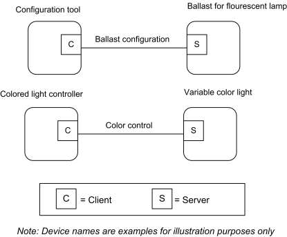
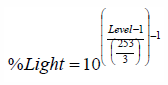

CHAPTER 5 LIGHTING ¶
The Cluster Library is made of individual chapters such as this one. See Document Control in the Cluster Library for a list of all chapters and documents. References between chapters are made using a X.Y notation where X is the chapter and Y is the sub-section within that chapter. References to external documents are contained in Chapter 1 and are made using [Rn] notation.
5.1 General Description ¶
5.1.1 Introduction ¶
The clusters specified in this document are for use typically in lighting applications, but MAY be used in any application domain.
5.1.2 Terms ¶
Ballast Factor: A measure of the light output (lumens) of a ballast and lamp combination in comparison to an ANSI standard ballast operated with the same lamp. Multiply the ballast factor by the rated lumens of the lamp to get the light output of the lamp/ballast combination.
HSV: Hue, Saturation, Value. A color space, also known as HSB (Hue, Saturation, Brightness). This is a well-known transformation of the RGB (Red, Green, Blue) color space. For more information see e.g., http://en.wikipedia.org/wiki/HSV_color_space.
Illuminance: The density of incident luminous flux on a surface. Illuminance is the standard metric for lighting levels, and is measured in lux (lx).
5.1.3 Cluster List ¶
This section lists the clusters specified in this document and gives examples of typical usage for the purpose of clarification. The clusters specified in this document are listed in Table 5.1.
Table 5.1. Clusters Specified for the Lighting Functional Domain ¶
| ID | Cluster Name | Description |
|---|---|---|
| 0x0300 | Color Control | Attributes and commands for controlling the color of a color-capable light. |
| 0x0301 | Ballast Configuration | Attributes and commands for configuring a lighting ballast |
Figure 5-1. Typical Usage of Ballast Configuration and Color Control Clusters ¶

5.2 Color Control Cluster ¶
5.2.1 Overview ¶
Please see Chapter 2 for a general cluster overview defining cluster architecture, revision, classification, identification, etc.
This cluster provides an interface for changing the color of a light. Color is specified according to the Commission Internationale de l'Éclairage (CIE) specification CIE 1931 Color Space, [I1]. Color control is carried out in terms of x,y values, as defined by this specification.
Additionally, color MAY optionally be controlled in terms of color temperature, or as hue and saturation values based on optionally variable RGB and W color points. It is recommended that the hue and saturation are interpreted according to the HSV (aka HSB) color model.
Control over luminance is not included, as this is provided by means of the Level Control for Lighting cluster of the General library (see Chapter 3). It is recommended that the level provided by this cluster be interpreted as representing a proportion of the maximum intensity achievable at the current color.
5.2.1.1 Revision History ¶
The global ClusterRevision attribute value SHALL be the highest revision number in the table below.
| Rev | Description |
|---|---|
| 1 | mandatory global ClusterRevision attribute added; CCB 2028 |
| 2 | added Options attribute, CCB 2085 2104 2124 2230; ZLO 1.0 |
| 3 | CCB 2501 2814 2839 2840 2843 2861 |
5.2.1.2 Classification ¶
| Hierarchy | Role | PICS Code | Primary Transaction |
|---|---|---|---|
| Base | Application | CC | Type 1 (client to server) |
5.2.1.3 Cluster Identifiers ¶
| Identifier | Name |
|---|---|
| 0x0300 | Color Control |
5.2.2 Server ¶
5.2.2.1 Dependencies ¶
5.2.2.1.1 Coupling color temperature to Level Control ¶
If the Level Control for Lighting cluster identifier 0x0008 is supported on the same endpoint as the Color Control cluster and color temperature is supported, it is possible to couple changes in the current level to the color temperature.
The CoupleColorTempToLevel bit of the Options attribute of the Level Control cluster indicates whether the color temperature is to be linked with the CurrentLevel attribute in the Level Control cluster.
If the CoupleColorTempToLevel bit of the Options attribute of the Level Control cluster is equal to 1 and the ColorMode or EnhancedColorMode attribute is set to 0x02 (color temperature) then a change in the Cur-rentLevel attribute SHALL affect the ColorTemperatureMireds attribute. This relationship is manufacturer specific, with the qualification that the maximum value of the CurrentLevel attribute SHALL correspond to a ColorTemperatureMired attribute value equal to the CoupleColorTempToLevelMinMireds attribute. This relationship is one-way so a change to the ColorTemperatureMireds attribute SHALL NOT have any effect on the CurrentLevel attribute.
In order to simulate the behavior of an incandescent bulb, a low value of the CurrentLevel attribute SHALL be associated with a high value of the ColorTemperatureMireds attribute (i.e., a low value of color temperature in kelvins).
If the CoupleColorTempToLevel bit of the Options attribute of the Level Control cluster is equal to 0, there SHALL be no link between color temperature and current level.
5.2.2.2 Attributes ¶
For convenience, the attributes defined in this specification are arranged into sets of related attributes; each set can contain up to 16 attributes. Attribute identifiers are encoded such that the most significant three nibbles specify the attribute set and the least significant nibble specifies the attribute within the set. The currently defined attribute sets are listed in Table 5.2.
Table 5.2. Hue Control Attribute Sets ¶
| Attribute Set Identifier | Description |
|---|---|
| 0x000, 0x400 | Color Information |
| 0x001 | Defined Primaries Information |
|---|---|
| 0x002 | Additional Defined Primaries Information |
| 0x003 | Defined Color Point Settings |
5.2.2.2.1 Color Information Attribute Set ¶
The Color Information attribute set contains the attributes summarized below.
Table 5.3. Attributes of the Color Information Attribute Set ¶
| Id | Name | Type | Range | Acc | Def | M/ O |
|---|---|---|---|---|---|---|
| 0x0000 | CurrentHue | uint8 | 0x00 – 0xfe | RP | 0x00 | M0 |
| 0x0001 | CurrentSaturation | uint8 | 0x00 – 0xfe | RPS | 0x00 | M0 |
| 0x0002 | RemainingTime | uint16 | 0x0000 – 0xfffe | R | 0x00 | O |
| 0x0003 | CurrentX | uint16 | 0x0000 - 0xfeff | RPS | 0x616b (0.381) | M3 |
| 0x0004 | CurrentY | uint16 | 0x0000 - 0xfeff | RPS | 0x607d (0.377) | M3 |
| 0x0005 | DriftCompensation | enum8 | 0x00 – 0x04 | R | - | O |
| 0x0006 | CompensationText | string | 0 to 254 chars | R | - | O |
| 0x0007 | ColorTemperatureMireds | uint16 | 0x0000 - 0xfeff | RPS | 0x00fa (4000K) | M4 |
| 0x0008 | ColorMode | enum8 | 0x00 – 0x02 | R | 0x01 | M |
| 0x000f | Options | map8 | RW | 0x00 | M | |
| 0x4000 | EnhancedCurrentHue | uint16 | 0x0000 – 0xffff | RS | 0x0000 | M1 |
| 0x4001 | EnhancedColorMode | enum8 | 0x00 – 0xff | R | 0x01 | M |
| 0x4002 | ColorLoopActive | uint8 | 0x00 – 0xff | RS | 0x00 | M2 |
| 0x4003 | ColorLoopDirection | uint8 | 0x00 – 0xff | RS | 0x00 | M2 |
| 0x4004 | ColorLoopTime | uint16 | 0x0000 – 0xffff | RS | 0x0019 | M2 |
| 0x4005 | ColorLoopStartEnhancedHue | uint16 | 0x0000 – 0xffff | R | 0x2300 | M2 |
| 0x4006 | ColorLoopStoredEnhancedHue | uint16 | 0x0000 – 0xffff | R | 0x0000 | M2 |
| 0x400a | ColorCapabilities | map16 | 0x0000 – 0x001f | R | 0x0000 | M |
| 0x400b | ColorTempPhysicalMinMireds | uint16 | 0x0000 – 0xfeff | R | 0x0000 | M4 |
| 0x400c | ColorTempPhysicalMaxMireds | uint16 | 0x0000 – 0xfeff | R | 0xfeff | M4 |
| 0x400d | CoupleColorTempToLev- elMinMireds | uint16 | ColorTempPhysicalMinMireds to 𝐶𝑜𝑙𝑜𝑟𝑇𝑒𝑚𝑝𝑒𝑟𝑎𝑡𝑢𝑟𝑒𝑀𝑖𝑟𝑒𝑑87 | R | MS | M4* |
| 0x4010 | StartUpColorTemperatureMireds | uint16 | 0x0000-0xfeff88 | RW | MS | M4* |
Mi = Mandatory if bit i of the ColorCapabilities attribute is equal to 1, otherwise optional.
87 CCB 2840 88 CCB 2843
* Mandatory if ColorTemperatureMireds is supported.
5.2.2.2.1.1 CurrentHue Attribute ¶
The CurrentHue attribute contains the current hue value of the light. It is updated as fast as practical during commands that change the hue.
The hue in degrees SHALL be related to the CurrentHue attribute by the relationship Hue = CurrentHue x 360 / 254 (CurrentHue in the range 0 - 254 inclusive)
If this attribute is implemented then the CurrentSaturation and ColorMode attributes SHALL also be implemented.
5.2.2.2.1.2 CurrentSaturation Attribute ¶
The CurrentSaturation attribute holds the current saturation value of the light. It is updated as fast as practical during commands that change the saturation.
The saturation SHALL be related to the CurrentSaturation attribute by the relationship Saturation = CurrentSaturation/254 (CurrentSaturation in the range 0 - 254 inclusive)
If this attribute is implemented then the CurrentHue and ColorMode attributes SHALL also be implemented.
5.2.2.2.1.3 RemainingTime Attribute ¶
The RemainingTime attribute holds the time remaining, in 1/10ths of a second, until the currently active command will be complete.
5.2.2.2.1.4 CurrentX Attribute ¶
The CurrentX attribute contains the current value of the normalized chromaticity value x, as defined in the CIE xyY Color Space. It is updated as fast as practical during commands that change the color.
The value of x SHALL be related to the CurrentX attribute by the relationship
x = CurrentX / 65536 (CurrentX in the range 0 to 65279 inclusive)
5.2.2.2.1.5 CurrentY Attribute ¶
The CurrentY attribute contains the current value of the normalized chromaticity value y, as defined in the CIE xyY Color Space. It is updated as fast as practical during commands that change the color.
The value of y SHALL be related to the CurrentY attribute by the relationship
y = CurrentY / 65536 (CurrentY in the range 0 to 65279 inclusive)
5.2.2.2.1.6 DriftCompensation Attribute ¶
The DriftCompensation attribute indicates what mechanism, if any, is in use for compensation for color/intensity drift over time. It SHALL be one of the non-reserved values in Table 5.4.
Table 5.4. Values of the DriftCompensation Attribute ¶
| Attribute Value | Description |
|---|---|
| 0x00 | None |
| 0x01 | Other / Unknown |
| 0x02 | Temperature monitoring |
| 0x03 | Optical luminance monitoring and feedback |
| 0x04 | Optical color monitoring and feedback |
|---|
5.2.2.2.1.7 CompensationText Attribute ¶
The CompensationText attribute holds a textual indication of what mechanism, if any, is in use to compensate for color/intensity drift over time.
5.2.2.2.1.8 ColorTemperatureMireds Attribute ¶
The ColorTemperatureMireds attribute contains a scaled inverse of the current value of the color temperature. The unit of ColorTemperatureMireds is the mired (micro reciprocal degree), AKA mirek (micro reciprocal kelvin). It is updated as fast as practical during commands that change the color.
The color temperature value in kelvins SHALL be related to the ColorTemperatureMireds attribute in mireds by the relationship
Color temperature in kelvins = 1,000,000 / ColorTemperatureMireds, where ColorTemperatureMireds is in the range 1 to 65279 mireds inclusive, giving a color temperature range from 1,000,000 kelvins to 15.32 kelvins.
The value ColorTemperatureMireds = 0x0000 indicates an undefined value. The value ColorTemperature- Mireds = 0xffff indicates an invalid value.
If this attribute is implemented then the ColorMode attribute SHALL also be implemented.
5.2.2.2.1.9 ColorMode Attribute ¶
The ColorMode attribute indicates which attributes are currently determining the color of the device. If either the CurrentHue or CurrentSaturation attribute is implemented, this attribute SHALL also be implemented, otherwise it is optional.
The value of the ColorMode attribute cannot be written directly - it is set upon reception of any command in section 5.2.2.3 to the appropriate mode for that command.
Table 5.5. Values of the ColorMode Attribute ¶
| Attribute Value | Attributes that Determine the Color |
|---|---|
| 0x00 | CurrentHue and CurrentSaturation |
| 0x01 | CurrentX and CurrentY |
| 0x02 | ColorTemperatureMireds |
5.2.2.2.1.10 Options Attribute ¶
The Options attribute is meant to be changed only during commissioning. The Options attribute is a bitmap that determines the default behavior of some cluster commands. Each command that is dependent on the Options attribute SHALL first construct a temporary Options bitmap that is in effect during the command processing. The temporary Options bitmap has the same format and meaning as the Options attribute, but includes any bits that may be overridden by command fields.
Below is the format and description of the Options attribute and temporary Options bitmap and the effect on dependent commands.
Table 5.6. Options Attribute ¶
| Bit | Name | Values & Summary |
|---|---|---|
| 0 | ExecuteIfOff | 0 – Do not execute command if the On/Off cluster, OnOff attribute is 0x00 (FALSE) 1 – Execute command if the On/Off cluster, OnOff attribute is 0x00 (FALSE) |
ExecuteIfOff: Command execution SHALL NOT continue beyond the Options processing if all of these
criteria are true:
- The On/Off cluster exists on the same endpoint as this cluster.
- The OnOff attribute of the On/Off cluster, on this endpoint, is 0x00 (FALSE).
- The value of the ExecuteIfOff bit is 0.
5.2.2.2.1.11 EnhancedCurrentHue Attribute ¶
The EnhancedCurrentHue attribute represents non-equidistant steps along the CIE 1931 color triangle, and it provides 16-bits precision.
The upper 8 bits of this attribute SHALL be used as an index in the implementation specific XY lookup table to provide the non-equidistance steps (see the ZLL test specification for an example). The lower 8 bits SHALL be used to interpolate between these steps in a linear way in order to provide color zoom for the user.
To provide compatibility with standard ZCL, the CurrentHue attribute SHALL contain a hue value in the range 0 to 254, calculated from the EnhancedCurrentHue attribute.
5.2.2.2.1.12 EnhancedColorMode Attribute ¶
The EnhancedColorMode attribute specifies which attributes are currently determining the color of the device, as detailed in Table 5.7.
Table 5.7. Values of the EnhancedColorMode Attribute ¶
| Attribute Value | Attributes That Determine the Color |
|---|---|
| 0x00 | CurrentHue and CurrentSaturation |
| 0x01 | CurrentX and CurrentY |
| 0x02 | ColorTemperatureMireds |
| 0x03 | EnhancedCurrentHue and CurrentSaturation |
To provide compatibility with standard ZCL, the original ColorMode attribute SHALL indicate ‘CurrentHue and CurrentSaturation’ when the light uses the EnhancedCurrentHue attribute. If the ColorMode attribute is changed, e.g., due to one of the standard color control cluster commands defined in the ZCL, its new value SHALL be copied to the EnhancedColorMode attribute.
5.2.2.2.1.13 ColorLoopActive Attribute ¶
The ColorLoopActive attribute specifies the current active status of the color loop. If this attribute has the value 0x00, the color loop SHALL not be active. If this attribute has the value 0x01, the color loop SHALL be active. All other values (0x02 – 0xff) are reserved.
5.2.2.2.1.14 ColorLoopDirection Attribute ¶
The ColorLoopDirection attribute specifies the current direction of the color loop. If this attribute has the value 0x00, the EnhancedCurrentHue attribute SHALL be decremented. If this attribute has the value 0x01, the EnhancedCurrentHue attribute SHALL be incremented. All other values (0x02 – 0xff) are reserved.
5.2.2.2.1.15 ColorLoopTime Attribute ¶
The ColorLoopTime attribute specifies the number of seconds it SHALL take to perform a full color loop, i.e., to cycle all values of the EnhancedCurrentHue attribute (between 0x0000 and 0xffff).
5.2.2.2.1.16 ColorLoopStartEnhancedHue Attribute ¶
The ColorLoopStartEnhancedHue attribute specifies the value of the EnhancedCurrentHue attribute from which the color loop SHALL be started.
5.2.2.2.1.17 ColorLoopStoredEnhancedHue Attribute ¶
The ColorLoopStoredEnhancedHue attribute specifies the value of the EnhancedCurrentHue attribute before the color loop was started. Once the color loop is complete, the EnhancedCurrentHue attribute SHALL be restored to this value.
5.2.2.2.1.18 ColorCapabilities Attribute ¶
The ColorCapabilities attribute specifies the color capabilities of the device supporting the color control cluster, as illustrated in Table 5.8. If a bit is set to 1, the corresponding attributes and commands SHALL become mandatory. If a bit is set to 0, the corresponding attributes and commands need not be implemented.
Table 5.8. Bit Values of the ColorCapabilities Attribute ¶
| Value | Description | Related Attributes | Mandatory Commands |
|---|---|---|---|
| 0 | Hue/saturation supported | CurrentHue CurrentSaturation | Move to hue Move hue Step hue Move to saturation Move saturation Step saturation Move to hue and saturation Stop move step |
| 1 | Enhanced hue supported Note: hue/saturation must also be supported. | EnhancedCurrentHue | Enhanced move to hue Enhanced move hue Enhanced step hue Enhanced move to hue and saturation Stop move step |
| 2 | Color loop supported Note: enhanced hue must also be supported. | ColorLoopActive ColorLoopDirection ColorLoopTime ColorLoopStartEnhancedHue ColorLoopStoredEnhancedHue | Color loop set |
| Value | Description | Related Attributes | Mandatory Commands |
|---|---|---|---|
| 3 | XY attributes supported | CurrentX CurrentY | Move to color Move color Step color Stop move step |
| 4 | Color temperature supported | ColorTemperatureMireds ColorTempPhysicalMinMireds ColorTempPhysicalMaxMireds | Move to color temperature Move color temperature Step color temperature Stop move step |
On receipt of a unicast color control cluster command that is not supported or a general command which affects a color control cluster attribute that is not supported, the device SHALL respond with a default response command with a status indicating an unsupported cluster command or unsupported attribute, respectively.
5.2.2.2.1.19 ColorTempPhysicalMinMireds Attribute ¶
The ColorTempPhysicalMinMireds attribute indicates the minimum mired value supported by the hardware. ColorTempPhysicalMinMireds corresponds to the maximum color temperature in kelvins supported by the hardware. ColorTempPhysicalMinMireds ≤ ColorTemperatureMireds.
5.2.2.2.1.20 ColorTempPhysicalMaxMireds Attribute ¶
The ColorTempPhysicalMaxMireds attribute indicates the maximum mired value supported by the hardware. ColorTempPhysicalMaxMireds corresponds to the minimum color temperature in kelvins supported by the hardware. ColorTemperatureMireds ≤ ColorTempPhysicalMaxMireds.
5.2.2.2.1.21 CoupleColorTempToLevelMinMireds Attribute ¶
The CoupleColorTempToLevelMinMireds attribute specifies a lower bound on the value of the ColorTemper-atureMireds attribute for the purposes of coupling the ColorTemperatureMireds attribute to the CurrentLevel attribute when the CoupleColorTempToLevel bit of the Options attribute of the Level Control cluster is equal to 1. When coupling the ColorTemperatureMireds attribute to the CurrentLevel attribute, this value SHALL correspond to a CurrentLevel value of 0xfe (100%).
This attribute SHALL be set such that the following relationship exists:
𝐶𝑜𝑙𝑜𝑟𝑇𝑒𝑚𝑝𝑃ℎ𝑦𝑠𝑖𝑐𝑎𝑙𝑀𝑖𝑛𝑀𝑖𝑟𝑒𝑑𝑠 ≤𝐶𝑜𝑢𝑝𝑙𝑒𝐶𝑜𝑙𝑜𝑟𝑇𝑒𝑚𝑝𝑇𝑜𝐿𝑒𝑣𝑒𝑙𝑀𝑖𝑛𝑀𝑖𝑟𝑒𝑑𝑠 ≤𝐶𝑜𝑙𝑜𝑟𝑇𝑒𝑚𝑝𝑒𝑟𝑎𝑡𝑢𝑟𝑒𝑀𝑖𝑟𝑒𝑑𝑠
Note that since this attribute is stored as a micro reciprocal degree (mired) value (i.e. color temperature in kelvins = 1,000,000 / CoupleColorTempToLevelMinMireds), the CoupleColorTempToLevel-MinMireds attribute corresponds to an upper bound on the value of the color temperature in kelvins supported by the device.
5.2.2.2.1.22 StartUpColorTemperatureMireds Attribute ¶
The StartUpColorTemperatureMireds attribute SHALL define the desired startup color temperature value a lamp SHALL use when it is supplied with power and this value SHALL be reflected in the ColorTempera-tureMireds attribute. In addition, the ColorMode and EnhancedColorMode attributes SHALL be set to 0x02 (color temperature). The values of the StartUpColorTemperatureMireds attribute are listed in the table below,
89 CCB 2861 deleted text for mandatory CurrentX/Y support
Table 5.9. Values of the StartUpColorTemperatureMireds attribute ¶
| Value | Action on power up |
|---|---|
| 0x0000 – 0xffef | Set the ColorTemperatureMireds attribute to this value. |
| 0xffff | Set the ColorTemperatureMireds attribute to its previous value. |
5.2.2.2.2 Defined Primaries Information Attribute Set ¶
The Defined Primaries Information attribute set contains the attributes summarized in Table 5.10.
Table 5.10. Defined Primaries Information Attribute Set ¶
| Id | Name | Type | Range | Access | Def | M/O |
|---|---|---|---|---|---|---|
| 0x0010 | NumberOfPrimaries | uint8 | 0x00 – 0x06 | R | - | M |
| 0x0011 | Primary1X | uint16 | 0x0000 – 0xfeff | R | - | M0 |
| 0x0012 | Primary1Y | uint16 | 0x0000 – 0xfeff | R | - | M0 |
| 0x0013 | Primary1Intensity | uint8 | 0x00 - 0xff | R | - | M0 |
| 0x0014 | Reserved | - | - | - | - | - |
| 0x0015 | Primary2X | uint16 | 0x0000 – 0xfeff | R | - | M1 |
| 0x0016 | Primary2Y | uint16 | 0x0000 – 0xfeff | R | - | M1 |
| 0x0017 | Primary2Intensity | uint8 | 0x0000- 0xff | R | - | M1 |
| 0x0018 | Reserved | - | - | - | - | - |
| 0x0019 | Primary3X | uint16 | 0x0000 – 0xfeff | R | - | M2 |
| 0x001a | Primary3Y | uint16 | 0x0000 – 0xfeff | R | - | M2 |
| 0x001b | Primary3Intensity | uint8 | 0x00 - 0xff | R | - | M2 |
Mi = Mandatory if the value of the NumberOfPrimaries attribute is greater than i, otherwise optional.
5.2.2.2.2.1 NumberOfPrimaries Attribute ¶
The NumberOfPrimaries attribute contains the number of color primaries implemented on this device. A value of 0xff SHALL indicate that the number of primaries is unknown.
Where this attribute is implemented, the attributes below for indicating the “x” and “y” color values of the primaries SHALL also be implemented for each of the primaries from 1 to NumberOfPrimaries, without leaving gaps. Implementation of the Primary1Intensity attribute and subsequent intensity attributes is optional.
5.2.2.2.2.2 Primary1X Attribute ¶
The Primary1X attribute contains the normalized chromaticity value x for this primary, as defined in the CIE xyY Color Space.
The value of x SHALL be related to the Primary1X attribute by the relationship
x = Primary1X / 65536 (Primary1X in the range 0 to 65279 inclusive)
5.2.2.2.2.3 Primary1Y Attribute ¶
The Primary1Y attribute contains the normalized chromaticity value y for this primary, as defined in the CIE xyY Color Space.
The value of y SHALL be related to the Primary1Y attribute by the relationship
y = Primary1Y / 65536 (Primary1Y in the range 0 to 65279 inclusive)
5.2.2.2.2.4 Primary1Intensity Attribute ¶
The Primary1intensity attribute contains a representation of the maximum intensity of this primary as defined in the Dimming Light Curve in the Ballast Configuration cluster (see 5.3), normalized such that the primary with the highest maximum intensity contains the value 0xfe.
A value of 0xff SHALL indicate that this primary is not available.
5.2.2.2.2.5 Remaining Attributes ¶
The Primary2X, Primary2Y, Primary2Intensity, Primary3X, Primary3Y and Primary3Intensity attributes are used to represent the capabilities of the 2nd and 3rd primaries, where present, in the same way as for the Primary1X, Primary1Y and Primary1Intensity attributes.
5.2.2.2.3 Additional Defined Primaries Information Attribute Set ¶
The Additional Defined Primaries Information attribute set contains the attributes summarized in Table 5.11.
Table 5.11. Additional Defined Primaries Information Attribute Set ¶
| Id | Name | Type | Range | Access | Def | M/O |
|---|---|---|---|---|---|---|
| 0x0020 | Primary4X | uint16 | 0x0000 – 0xfeff | R | - | M3 |
| 0x0021 | Primary4Y | uint16 | 0x0000 – 0xfeff | R | - | M3 |
| 0x0022 | Primary4Intensity | uint8 | 0x00 – 0xff | R | - | M3 |
| 0x0023 | Reserved | - | - | - | - | - |
| 0x0024 | Primary5X | uint16 | 0x0000 – 0xfeff | R | - | M4 |
| 0x0025 | Primary5Y | uint16 | 0x0000 – 0xfeff | R | - | M4 |
| 0x0026 | Primary5Intensity | uint8 | 0x00 – 0xff | R | - | M4 |
| 0x0027 | Reserved | - | - | - | - | - |
| 0x0028 | Primary6X | uint16 | 0x0000 – 0xfeff | R | - | M5 |
| 0x0029 | Primary6Y | uint16 | 0x0000 – 0xfeff | R | - | M5 |
| Id | Name | Type | Range | Access | Def | M/O |
|---|---|---|---|---|---|---|
| 0x002a | Primary6Intensity | uint8 | 0x00 – 0xff | R | - | M5 |
Mi = Mandatory if the value of the NumberOfPrimaries attribute is greater than i, otherwise optional.
5.2.2.2.3.1 Attributes ¶
The Primary4X, Primary4Y, Primary4Intensity, Primary5X, Primary5Y, Primary5Intensity, Primary6X, Pri-mary6Y and Primary6Intensity attributes represent the capabilities of the 4th, 5th and 6th primaries, where present, in the same way as the Primary1X, Primary1Y and Primary1Intensity attributes.
5.2.2.2.4 Defined Color Points Settings Attribute Set ¶
The Defined Color Points Settings attribute set contains the attributes summarized in Table 5.12.
Table 5.12. Defined Color Points Settings Attribute Set ¶
| Id | Name | Type | Range | Access | Def | M/O |
|---|---|---|---|---|---|---|
| 0x0030 | WhitePointX | uint16 | 0x0000 – 0xfeff | RW | - | O |
| 0x0031 | WhitePointY | uint16 | 0x0000 – 0xfeff | RW | - | O |
| 0x0032 | ColorPointRX | uint16 | 0x0000 – 0xfeff | RW | - | O |
| 0x0033 | ColorPointRY | uint16 | 0x0000 – 0xfeff | RW | - | O |
| 0x0034 | ColorPointRIntensity | uint8 | 0x00 – 0xff | RW | - | O |
| 0x0035 | Reserved | - | - | - | - | - |
| 0x0036 | ColorPointGX | uint16 | 0x0000 – 0xfeff | RW | - | O |
| 0x0037 | ColorPointGY | uint16 | 0x0000 – 0xfeff | RW | - | O |
| 0x0038 | ColorPointGIntensity | uint8 | 0x00 – 0xff | RW | - | O |
| 0x0039 | Reserved | - | - | - | - | - |
| 0x003a | ColorPointBX | uint16 | 0x0000 – 0xfeff | RW | - | O |
| 0x003b | ColorPointBY | uint16 | 0x0000 – 0xfeff | RW | O | |
| 0x003c | ColorPointBIntensity | uint8 | 0x00 – 0xff | RW | O |
5.2.2.2.4.1 WhitePointX Attribute ¶
The WhitePointX attribute contains the normalized chromaticity value x, as defined in the CIE xyY Color Space, of the current white point of the device.
The value of x SHALL be related to the WhitePointX attribute by the relationship
x = WhitePointX / 65536
(WhitePointX in the range 0 to 65279 inclusive)
5.2.2.2.4.2 WhitePointY Attribute ¶
The WhitePointY attribute contains the normalized chromaticity value y, as defined in the CIE xyY Color Space, of the current white point of the device.
The value of y SHALL be related to the WhitePointY attribute by the relationship
y = WhitePointY / 65536 (WhitePointY in the range 0 to 65279 inclusive)
5.2.2.2.4.3 ColorPointRX Attribute ¶
The ColorPointRX attribute contains the normalized chromaticity value x, as defined in the CIE xyY Color Space, of the red color point of the device.
The value of x SHALL be related to the ColorPointRX attribute by the relationship
x = ColorPointRX / 65536
(ColorPointRX in the range 0 to 65279 inclusive)
5.2.2.2.4.4 ColorPointRY Attribute ¶
The ColorPointRY attribute contains the normalized chromaticity value y, as defined in the CIE xyY Color Space, of the red color point of the device.
The value of y SHALL be related to the ColorPointRY attribute by the relationship
y = ColorPointRY / 65536
(ColorPointRY in the range 0 to 65279 inclusive)
5.2.2.2.4.5 ColorPointRIntensity Attribute ¶
The ColorPointRIntensity attribute contains a representation of the relative intensity of the red color point as defined in the Dimming Light Curve in the Ballast Configuration cluster (see 5.3), normalized such that the color point with the highest relative intensity contains the value 0xfe.
A value of 0xff SHALL indicate an invalid value.
5.2.2.2.4.6 Remaining Attributes ¶
The ColorPointGX, ColorPointGY, ColorPointGIntensity, ColorPointBX, ColorPointBY and, ColorPoint- BIntensity attributes are used to represent the chromaticity values and intensities of the green and blue color points, in the same way as for the ColorPointRX, ColorPointRY and ColorPointRIntensity attributes.
If any one of these red, green or blue color point attributes is implemented then they SHALL all be implemented.
5.2.2.3 Commands Received ¶
The command IDs for the Color Control cluster are listed in Table 5.13.
Table 5.13. Command IDs for the Color Control Cluster ¶
| Command Identifier | Description | M/O |
|---|---|---|
| 0x00 | Move to Hue | M0 |
| 0x01 | Move Hue | M0 |
| Command Identifier | Description | M/O |
|---|---|---|
| 0x02 | Step Hue | M0 |
| 0x03 | Move to Saturation | M0 |
| 0x04 | Move Saturation | M0 |
| 0x05 | Step Saturation | M0 |
| 0x06 | Move to Hue and Saturation | M0 |
| 0x07 | Move to Color | M3 |
| 0x08 | Move Color | M3 |
| 0x09 | Step Color | M3 |
| 0x0a | Move to Color Temperature | M4 |
| 0x40 | Enhanced Move to Hue | M1 |
| 0x41 | Enhanced Move Hue | M1 |
| 0x42 | Enhanced Step Hue | M1 |
| 0x43 | Enhanced Move to Hue and Saturation | M1 |
| 0x44 | Color Loop Set | M2 |
| 0x47 | Stop Move Step | M0,1,3,4 |
| 0x4b | Move Color Temperature | M4 |
| 0x4c | Step Color Temperature | M4 |
Mi = Mandatory if bit i of the ColorCapabilities attribute is equal to 1, otherwise optional.
5.2.2.3.1 Generic Usage Notes ¶
If one of these commands is received while the device is in its off state, i.e., the OnOff attribute of the on/off cluster is equal to 0x00, the command SHALL be ignored.
When asked to change color via one of these commands, the implementation SHALL select a color, within the limits of the hardware of the device, which is as close as possible to that requested. The determination as to the true representations of color is out of the scope of this specification.
If a color loop is active (i.e., the ColorLoopActive attribute is equal to 0x01), it SHALL only be stopped by sending a specific color loop set command frame with a request to deactivate the color loop (i.e., the color loop SHALL not be stopped on receipt of another command such as the enhanced move to hue command). In addition, while a color loop is active, a manufacturer MAY choose to ignore incoming color commands which affect a change in hue.
For the move hue command, the Rate field specifies the rate of movement in steps per second. A step is a change in the device’s hue of one unit. If the move mode field is equal to 0x01 (Up) or 0x03 (Down) and the Rate field has a value of zero, the command has no effect and a default response command (see 2.4.12) is sent in response, with the status code set to INVALID_FIELD.
For the move to color temperature command, if the target color specified is not achievable by the hardware then the color temperature SHALL be clipped at the physical minimum or maximum achievable, depending on the color temperature transition, when the device reaches that color temperature (which MAY be before the requested transition time), and a ZCL default response command SHALL be generated, where not disabled, with a status code equal to SUCCESS.
5.2.2.3.2 Note on Change of ColorMode ¶
The first action taken when any one of these commands is received is to change the ColorMode attribute to the appropriate value for the command (see individual commands). Note that, when moving from one color mode to another (e.g., CurrentX/CurrentY to CurrentHue/CurrentSaturation), the starting color for the command is formed by calculating the values of the new attributes (in this case CurrentHue, CurrentSaturation) from those of the old attributes (in this case CurrentX and CurrentY).
When moving from a mode to another mode that has a more restricted color range (e.g., CurrentX/CurrentY to CurrentHue/CurrentSaturation, or CurrentHue/CurrentSaturation to ColorTemperatureMireds) it is possible for the current color value to have no equivalent in the new mode. The behavior in such cases is manufacturer dependent, and therefore it is recommended to avoid color mode changes of this kind during usage.
5.2.2.3.3 Use of the OptionsMask & OptionsOverride fields ¶
The OptionsMask & OptionsOverride fields SHALL both be present.90 Default values are provided to interpret missing fields from legacy devices. A temporary Options bitmap SHALL be created from the Options attribute, using the OptionsMask & OptionsOverride fields. Each bit of the temporary Options bitmap SHALL be determined as follows:
Each bit in the Options attribute SHALL determine the corresponding bit in the temporary Options bitmap, unless the OptionsMask field is present and has the corresponding bit set to 1, in which case the corresponding bit in the OptionsOverride field SHALL determine the corresponding bit in the temporary Options bitmap.
The resulting temporary Options bitmap SHALL then be processed as defined in section 5.2.2.2.1.10.
5.2.2.3.4 Move to Hue Command ¶
5.2.2.3.4.1 Payload Format ¶
The Move to Hue command payload SHALL be formatted as illustrated in Figure 5-2.
Figure 5-2. Format of the Move to Hue Command Payload ¶
| Octets | 1 | 1 | 2 | 1 | 1 |
|---|---|---|---|---|---|
| Data Type | uint8 | enum8 | uint16 | map8 | map8 |
| Field Name | Hue | Direction | Transition Time | OptionsMask | OptionsOverride |
| Default | n/a | n/a | n/a | 0 | 091 |
5.2.2.3.4.2 Hue Field ¶
The Hue field specifies the hue to be moved to.
90 CCB 2814 fields are mandatory because fields may follow 91 CCB 2814 defaults for legacy devices
5.2.2.3.4.3 Direction Field ¶
The Direction field SHALL be one of the non-reserved values in Table 5.14.
Table 5.14. Values of the Direction Field ¶
| Fade Mode Value | Description |
|---|---|
| 0x00 | Shortest distance |
| 0x01 | Longest distance |
| 0x02 | Up |
| 0x03 | Down |
5.2.2.3.4.4 Transition Time Field ¶
The Transition Time field specifies, in 1/10ths of a second, the time that SHALL be taken to move to the new hue.
5.2.2.3.4.5 OptionsMask and OptionsOverride fields ¶
The OptionsMask and OptionsOverride fields SHALL be processed according to section 5.2.2.3.3.
5.2.2.3.4.6 Effect on Receipt ¶
On receipt of this command, a device SHALL also set the ColorMode attribute to the value 0x00 and then SHALL move from its current hue to the value given in the Hue field.
The movement SHALL be continuous, i.e., not a step function, and the time taken to move to the new hue SHALL be equal to the Transition Time field.
As hue is effectively measured on a circle, the new hue MAY be moved to in either direction. The direction of hue change is given by the Direction field. If Direction is 'Shortest distance', the direction is taken that involves the shortest path round the circle. This case corresponds to expected normal usage. If Direction is 'Longest distance', the direction is taken that involves the longest path round the circle. This case can be used for 'rainbow effects'. In both cases, if both distances are the same, the Up direction SHALL be taken.
5.2.2.3.5 Move Hue Command ¶
5.2.2.3.5.1 Payload Format ¶
The Move Hue command payload SHALL be formatted as illustrated in Figure 5-3.
Figure 5-3. Format of the Move Hue Command Payload ¶
| Octets | 1 | 1 | 1 | 1 |
|---|---|---|---|---|
| Data Type | enum8 | uint8 | map8 | map8 |
| Field Name | Move Mode | Rate | OptionsMask | OptionsOverride |
| Default | n/a | n/a | 0 | 092 |
5.2.2.3.5.2 Move Mode Field ¶
92 CCB 2814 defaults for legacy devices
The Move Mode field SHALL be one of the non-reserved values in Table 5.15. If the Move Mode field is equal to 0x00 (Stop), the Rate field SHALL be ignored.93
Table 5.15. Values of the Move Mode Field ¶
| Move Mode Value | Description |
|---|---|
| 0x00 | Stop |
| 0x01 | Up |
| 0x02 | Reserved |
| 0x03 | Down |
5.2.2.3.5.3 Rate Field ¶
The Rate field specifies the rate of movement in steps per second. A step is a change in the device’s hue of one unit. If If the Move Mode field is set to 0x01 (up) or 0x03 (down) and the Rate field has a value of zero, the command has no effect and a Default Response command (see Chapter 2) SHALL be sent in response, with the status code set to INVALID_FIELD. If the Move Mode field is set to 0x00 (stop) the Rate field SHALL be ignored.94
5.2.2.3.5.4 OptionsMask and OptionsOverride field ¶
The OptionsMask and OptionsOverride fields SHALL be processed according to section 5.2.2.3.3.
5.2.2.3.5.5 Effect on Receipt ¶
On receipt of this command, a device SHALL set the ColorMode attribute to the value 0x00 and SHALL then move from its current hue in an up or down direction in a continuous fashion, as detailed in Table 5.16.
Table 5.16. Actions on Receipt for Move Hue Command ¶
| Fade Mode | Action on Receipt |
|---|---|
| Stop | If moving, stop, else ignore the command (i.e., the command is accepted but has no effect). NB This MAY also be used to stop a Move to Hue command, a Move to Saturation command, or a Move to Hue and Saturation command. |
| Up | Increase the device’s hue at the rate given in the Rate field. If the hue reaches the maximum allowed for the device, then proceed to its minimum allowed value. |
| Down | Decrease the device’s hue at the rate given in the Rate field. If the hue reaches the minimum allowed for the device, then proceed to its maximum al- lowed value. |
5.2.2.3.6 Step Hue Command ¶
5.2.2.3.6.1 Payload Format ¶
93 CCB 2501 94 CCB 2501
The Step Hue command payload SHALL be formatted as illustrated in Figure 5-4.
Figure 5-4. Format of the Step Hue Command Payload ¶
| Octets | 1 | 1 | 1 | 1 | 1 |
|---|---|---|---|---|---|
| Data Type | enum8 | uint8 | uint8 | map8 | map8 |
| Field Name | Step Mode | Step Size | Transition Time | OptionsMask | OptionsOverride |
| Default | n/a | n/a | n/a | 0 | 095 |
5.2.2.3.6.2 Step Mode Field ¶
The Step Mode field SHALL be one of the non-reserved values in Table 5.17.
Table 5.17. Values of the Step Mode Field ¶
| Fade Mode Value | Description |
|---|---|
| 0x00 | Reserved |
| 0x01 | Up |
| 0x02 | Reserved |
| 0x03 | Down |
5.2.2.3.6.3 Step Size Field ¶
The change to be added to (or subtracted from) the current value of the device’s hue.
5.2.2.3.6.4 Transition Time Field ¶
The Transition Time field specifies, in 1/10ths of a second, the time that SHALL be taken to perform the step. A step is a change in the device’s hue of ‘Step size’ units.
5.2.2.3.6.5 OptionsMask and OptionsOverride fields ¶
The OptionsMask and OptionsOverride fields SHALL be processed according to section 5.2.2.3.3.
5.2.2.3.6.6 Effect on Receipt ¶
On receipt of this command, a device SHALL set the ColorMode attribute to the value 0x00 and SHALL then move from its current hue in an up or down direction by one step, as detailed in Table 5.18.
Table 5.18. Actions on Receipt for Step Hue Command ¶
| Fade Mode | Action on Receipt |
|---|---|
| Up | Increase the device’s hue by one step, in a continuous fashion. If the hue value reaches the maximum value then proceed to the minimum al- lowed value. |
95 CCB 2814 defaults for legacy devices
| Down | Decrease the device’s hue by one step, in a continuous fashion. If the hue value reaches the minimum value then proceed to the maximum al- lowed value. |
5.2.2.3.7 Move to Saturation Command ¶
5.2.2.3.7.1 Payload Format ¶
The Move to Saturation command payload SHALL be formatted as illustrated in Figure 5-5.
Figure 5-5. Format of the Move to Saturation Command Payload ¶
| Octets | 1 | 2 | 1 | 1 |
|---|---|---|---|---|
| Data Type | uint8 | uint16 | map8 | map8 |
| Field Name | Saturation | Transition Time | OptionsMask | OptionsOverride |
| Default | n/a | n/a | 0 | 096 |
5.2.2.3.7.2 OptionsMask and OptionsOverride fields ¶
The OptionsMask and OptionsOverride fields SHALL be processed according to section 5.2.2.3.3.
5.2.2.3.7.3 Effect on Receipt ¶
On receipt of this command, a device set the ColorMode attribute to the value 0x00 and SHALL then move from its current saturation to the value given in the Saturation field.
The movement SHALL be continuous, i.e., not a step function, and the time taken to move to the new saturation SHALL be equal to the Transition Time field, in 1/10ths of a second.
5.2.2.3.8 Move Saturation Command ¶
5.2.2.3.8.1 Payload Format ¶
The Move Saturation command payload SHALL be formatted as illustrated in Figure 5-6.
Figure 5-6. Format of the Move Saturation Command Payload ¶
| Octets | 1 | 1 | 1 | 1 |
|---|---|---|---|---|
| Data Type | enum8 | uint8 | map8 | map8 |
| Field Name | Move Mode | Rate | OptionsMask | OptionsOverride |
| Default | n/a | n/a | 0 | 097 |
5.2.2.3.8.2 Move Mode Field ¶
96 CCB 2814 defaults for legacy devices 97 CCB 2814 defaults for legacy devices
The Move Mode field SHALL be one of the non-reserved values in Table 5.19. If the Move Mode field is equal to 0x00 (Stop), the Rate field SHALL be ignored.98
Table 5.19. Values of the Move Mode Field ¶
| Move Mode Value | Description |
|---|---|
| 0x00 | Stop |
| 0x01 | Up |
| 0x02 | Reserved |
| 0x03 | Down |
5.2.2.3.8.3 Rate Field ¶
The Rate field specifies the rate of movement in steps per second. A step is a change in the device’s saturation of one unit. If the Move Mode field is set to 0x01 (up) or 0x03 (down) and the Rate field has a value of zero, the command has no effect and a Default Response command (see Chapter 2) SHALL be sent in response, with the status code set to INVALID_FIELD. If the Move Mode field is set to 0x00 (stop) the Rate field SHALL be ignored.99OptionsMask and OptionsOverride fields
The OptionsMask and OptionsOverride fields SHALL be processed according to section 5.2.2.3.3.
5.2.2.3.8.4 Effect on Receipt ¶
On receipt of this command, a device SHALL set the ColorMode attribute to the value 0x00 and SHALL then move from its current saturation in an up or down direction in a continuous fashion, as detailed in Table 5.20.
Table 5.20. Actions on Receipt for Move Saturation Command ¶
| Fade Mode | Action on Receipt |
|---|---|
| Stop | If moving, stop, else ignore the command (i.e., the command is accepted but has no affect). NB This MAY also be used to stop a Move to Saturation com- mand, a Move to Hue command, or a Move to Hue and Saturation command. |
| Up | Increase the device’s saturation at the rate given in the Rate field. If the satu- ration reaches the maximum allowed for the device, stop. |
| Down | Decrease the device’s saturation at the rate given in the Rate field. If the satu- ration reaches the minimum allowed for the device, stop. |
5.2.2.3.9 Step Saturation Command ¶
5.2.2.3.9.1 Payload Format ¶
The Step Saturation command payload SHALL be formatted as illustrated in Figure 5-7.
98 CCB 2501 99 CCB 2501
Figure 5-7. Format of the Step Saturation Command Payload ¶
| Octets | 1 | 1 | 1 | 1 | 1 |
|---|---|---|---|---|---|
| Data Type | enum8 | uint8 | uint8 | map8 | map8 |
| Field Name | Step Mode | Step Size | Transition Time | OptionsMask | OptionsOverride |
| Default | n/a | n/a | n/a | 0 | 0100 |
5.2.2.3.9.2 Step Mode Field ¶
The Step Mode field SHALL be one of the non-reserved values in Table 5.21.
Table 5.21. Values of the Step Mode Field ¶
| Step Mode Value | Description |
|---|---|
| 0x00 | Reserved |
| 0x01 | Up |
| 0x02 | Reserved |
| 0x03 | Down |
5.2.2.3.9.3 Step Size Field ¶
The change to be added to (or subtracted from) the current value of the device’s saturation.
5.2.2.3.9.4 Transition Time Field ¶
The Transition Time field specifies, in 1/10ths of a second, the time that SHALL be taken to perform the step. A step is a change in the device’s saturation of ‘Step size’ units.
5.2.2.3.9.5 OptionsMask and OptionsOverride fields ¶
The OptionsMask and OptionsOverride fields SHALL be processed according to section 5.2.2.3.3.
5.2.2.3.9.6 Effect on Receipt ¶
On receipt of this command, a device SHALL set the ColorMode attribute to the value 0x00 and SHALL then move from its current saturation in an up or down direction by one step, as detailed in Table 5.22.
Table 5.22. Actions on Receipt for Step Saturation Command ¶
| Step Mode | Action on Receipt |
|---|---|
| Up | Increase the device’s saturation by one step, in a continuous fash- ion. However, if the saturation value is already the maximum value then do nothing. |
| Down | Decrease the device’s saturation by one step, in a continuous fash- ion. However, if the saturation value is already the minimum value then do nothing. |
100 CCB 2814 defaults for legacy devices
5.2.2.3.10 Move to Hue and Saturation Command ¶
5.2.2.3.10.1 Payload Format ¶
The Move to Hue and Saturation command payload SHALL be formatted as illustrated in Figure 5-8.
Figure 5-8. Move to Hue and Saturation Command Payload ¶
| Octets | 1 | 1 | 2 | 1 | 1 |
|---|---|---|---|---|---|
| Data Type | uint8 | uint8 | uint16 | map8 | map8 |
| Field Name | Hue | Saturation | Transition Time | OptionsMask | OptionsOverride |
| Default | n/a | n/a | n/a | 0 | 0101 |
5.2.2.3.10.2 OptionsMask and OptionsOverride fields ¶
The OptionsMask and OptionsOverride fields SHALL be processed according to section 5.2.2.3.3.
5.2.2.3.10.3 Effect on Receipt ¶
On receipt of this command, a device SHALL set the ColorMode attribute to the value 0x00 and SHALL then move from its current hue and saturation to the values given in the Hue and Saturation fields.
The movement SHALL be continuous, i.e., not a step function, and the time taken to move to the new color SHALL be equal to the Transition Time field, in 1/10ths of a second.
The path through color space taken during the transition is not specified, but it is recommended that the shortest path is taken though hue/saturation space, i.e., movement is ‘in a straight line’ across the hue/saturation disk.
5.2.2.3.11 Move to Color Command ¶
5.2.2.3.11.1 Payload Format ¶
The Move to Color command payload SHALL be formatted as illustrated in Figure 5-9.
Figure 5-9. Format of the Move to Color Command Payload ¶
| Octets | 2 | 2 | 2 | 1 | 1 |
|---|---|---|---|---|---|
| Data Type | uint16 | uint16 | uint16 | map8 | map8 |
| Field Name | ColorX | ColorY | Transition Time | OptionsMask | OptionsOverride |
| Default | n/a | n/a | n/a | 0 | 0102 |
5.2.2.3.11.2 OptionsMask and OptionsOverride fields ¶
The OptionsMask and OptionsOverride fields SHALL be processed according to section 5.2.2.3.3.
5.2.2.3.11.3 Effect on Receipt ¶
101 CCB 2814 defaults for legacy devices 102 CCB 2814 defaults for legacy devices
On receipt of this command, a device SHALL set the value of the ColorMode attribute, where implemented, to 0x01, and SHALL then move from its current color to the color given in the ColorX and ColorY fields.
The movement SHALL be continuous, i.e., not a step function, and the time taken to move to the new color SHALL be equal to the Transition Time field, in 1/10ths of a second.
The path through color space taken during the transition is not specified, but it is recommended that the shortest path is taken though color space, i.e., movement is 'in a straight line' across the CIE xyY Color Space.
5.2.2.3.12 Move Color Command ¶
5.2.2.3.12.1 Payload Format ¶
The Move Color command payload SHALL be formatted as illustrated in Figure 5-10.
Figure 5-10. Format of the Move Color Command Payload ¶
| Octets | 2 | 2 | 1 | 1 |
|---|---|---|---|---|
| Data Type | int16 | int16 | map8 | map8 |
| Field Name | RateX | RateY | OptionsMask | OptionsOverride |
| Default | n/a | n/a | 0 | 0103 |
5.2.2.3.12.2 RateX Field ¶
The RateX field specifies the rate of movement in steps per second. A step is a change in the device’s CurrentX attribute of one unit.
5.2.2.3.12.3 RateY Field ¶
The RateY field specifies the rate of movement in steps per second. A step is a change in the device’s CurrentY attribute of one unit.
5.2.2.3.12.4 OptionsMask and OptionsOverride fields ¶
The OptionsMask and OptionsOverride fields SHALL be processed according to section 5.2.2.3.3.
5.2.2.3.12.5 Effect on Receipt ¶
On receipt of this command, a device SHALL set the value of the ColorMode attribute, where implemented, to 0x01, and SHALL then move from its current color in a continuous fashion according to the rates specified. This movement SHALL continue until the target color for the next step cannot be implemented on this device.
If both the RateX and RateY fields contain a value of zero, no movement SHALL be carried out, and the command execution SHALL have no effect other than stopping the operation of any previously received command of this cluster. This command can thus be used to stop the operation of any other command of this cluster.
5.2.2.3.13 Step Color Command ¶
5.2.2.3.13.1 Payload Format ¶
The Step Color command payload SHALL be formatted as illustrated in Figure 5-11.
103 CCB 2814 defaults for legacy devices
Figure 5-11. Format of the Step Color Command Payload ¶
| Octets | 2 | 2 | 2 | 1 | 1 |
|---|---|---|---|---|---|
| Data Type | int16 | int16 | uint16 | map8 | map8 |
| Field Name | StepX | StepY | Transition Time | OptionsMask | OptionsOverride |
| Default | n/a | n/a | n/a | 0 | 0104 |
5.2.2.3.13.2 StepX and StepY Fields ¶
The StepX and StepY fields specify the change to be added to the device's CurrentX attribute and CurrentY attribute respectively.
5.2.2.3.13.3 Transition Time Field ¶
The Transition Time field specifies, in 1/10ths of a second, the time that SHALL be taken to perform the color change. 9999
5.2.2.3.13.4 OptionsMask and OptionsOverride fields ¶
The OptionsMask and OptionsOverride fields SHALL be processed according to section 5.2.2.3.3.
5.2.2.3.13.5 Effect on Receipt ¶
On receipt of this command, a device SHALL set the value of the ColorMode attribute, where implemented, to 0x01, and SHALL then move from its current color by the color step indicated.
The movement SHALL be continuous, i.e., not a step function, and the time taken to move to the new color SHALL be equal to the Transition Time field, in 1/10ths of a second.
The path through color space taken during the transition is not specified, but it is recommended that the shortest path is taken though color space, i.e., movement is 'in a straight line' across the CIE xyY Color Space.
Note also that if the required step is larger than can be represented by signed 16-bit integers then more than one step command SHOULD be issued.
5.2.2.3.14 Move to Color Temperature Command ¶
5.2.2.3.14.1 Payload Format ¶
The Move to Color Temperature command payload SHALL be formatted as illustrated in Figure 5-12.
Figure 5-12. Move to Color Temperature Command Payload ¶
| Octets | 2 | 2 | 1 | 1 |
|---|---|---|---|---|
| Data Type | uint16 | uint16 | map8 | map8 |
| Field Name | Color Temperature Mireds | Transition Time | OptionsMask | OptionsOverride |
| Default | n/a | n/a | 0 | 0105 |
5.2.2.3.14.2 OptionsMask and OptionsOverride fields ¶
104 CCB 2814 defaults for legacy devices 105 CCB 2814 defaults for legacy devices
The OptionsMask and OptionsOverride fields SHALL be processed according to section 5.2.2.3.3.
5.2.2.3.14.3 Effect on Receipt ¶
On receipt of this command, a device SHALL set the value of the ColorMode attribute, where implemented, to 0x02, and SHALL then move from its current color to the color given by the Color Temperature Mireds field.
The movement SHALL be continuous, i.e., not a step function, and the time taken to move to the new color SHALL be equal to the Transition Time field, in 1/10ths of a second.
By definition of this color mode, the path through color space taken during the transition is along the ‘Black Body Line'.
5.2.2.3.15 Enhanced Move to Hue Command ¶
The Enhanced Move to Hue command allows lamps to be moved in a smooth continuous transition from their current hue to a target hue.
The payload of this command SHALL be formatted as illustrated in Figure 5-13.
Figure 5-13. Format of the Enhanced Move to Hue Command ¶
| Octets | 2 | 1 | 2 | 1 | 1 |
|---|---|---|---|---|---|
| Data Type | uint16 | enum8 | uint16 | map8 | map8 |
| Field Name | Enhanced Hue | Direction | Transition Time | OptionsMask | OptionsOverride |
| Default | n/a | n/a | n/s | 0 | 0106 |
5.2.2.3.15.1 Enhanced Hue Field ¶
The Enhanced Hue field is 16-bits in length and specifies the target extended hue for the lamp.
5.2.2.3.15.2 Direction Field ¶
This field is identical to the Direction field of the Move to Hue command of the Color Control cluster (see sub-clause 5.2.2.3.3).
5.2.2.3.15.3 Transition Time Field ¶
This field is identical to the Transition Time field of the Move to Hue command of the Color Control cluster (see sub-clause 5.2.2.3.3).
5.2.2.3.15.4 OptionsMask and OptionsOverride fields ¶
The OptionsMask and OptionsOverride fields SHALL be processed according to section 5.2.2.3.3.
5.2.2.3.15.5 Effect on Receipt ¶
On receipt of this command, a device SHALL set the ColorMode attribute to 0x00 and set the EnhancedColorMode attribute to the value 0x03. The device SHALL then move from its current enhanced hue to the value given in the Enhanced Hue field.
The movement SHALL be continuous, i.e., not a step function, and the time taken to move to the new enhanced hue SHALL be equal to the Transition Time field.
106 CCB 2814 defaults for legacy devices
5.2.2.3.16 Enhanced Move Hue Command ¶
The Enhanced Move Hue command allows lamps to be moved in a continuous stepped transition from their current hue to a target hue.
The payload of this command SHALL be formatted as illustrated in Figure 5-14.
Figure 5-14. Format of the Enhanced Move Hue Command ¶
| Octets | 1 | 2 | 1 | 1 |
|---|---|---|---|---|
| Data Type | enum8 | uint16 | map8 | map8 |
| Field Name | Move Mode | Rate | OptionsMask | OptionsOver- ride |
| Default | n/a | n/a | 0 | 0107 |
5.2.2.3.16.1 Move Mode Field ¶
This field is identical to the Move Mode field of the Move Hue command of the Color Control cluster (see sub-clause 5.2.2.3.5). If the Move Mode field is equal to 0x00 (Stop), the Rate field SHALL be ignored.108
5.2.2.3.16.2 Rate field ¶
The Rate field is 16-bits in length and specifies the rate of movement in steps per second. A step is a change in the extended hue of a device by one unit. If the Move Mode field is set to 0x01 (up) or 0x03 (down) and the Rate field has a value of zero, the command has no effect and a ZCL Default Response command SHALL be sent in response, with the status code set to INVALID_FIELD. If the Move Mode field is set to 0x00 (stop) the Rate field SHALL be ignored.
5.2.2.3.16.3 OptionsMask and OptionsOverride fields ¶
The OptionsMask and OptionsOverride fields SHALL be processed according to section 5.2.2.3.3.
5.2.2.3.16.4 Effect on receipt ¶
On receipt of this command, a device SHALL set the ColorMode attribute to 0x00 and set the EnhancedColorMode attribute to the value 0x03. The device SHALL then move from its current enhanced hue in an up or down direction in a continuous fashion, as detailed in Table 5.23.
Table 5.23. Actions on Receipt of the Enhanced Move Hue Command ¶
| Move Mode | Action on Receipt |
|---|---|
| Stop | If moving, stop, else ignore the command (i.e., the command is accepted but has no effect). NB This MAY also be used to stop an Enhanced Move to Hue command or an enhanced Move to Hue and Saturation command. |
| Up | Increase the device’s enhanced hue at the rate given in the Rate field. If the en- hanced hue reaches the maximum allowed for the device, proceed to its minimum allowed value. |
| Down | Decrease the device’s enhanced hue at the rate given in the Rate field. If the hue reaches the minimum allowed for the device, proceed to its maximum allowed value. |
107 CCB 2814 defaults for legacy devices 108 CCB 2501
5.2.2.3.17 Enhanced Step Hue Command ¶
The Enhanced Step Hue command allows lamps to be moved in a stepped transition from their current hue to a target hue, resulting in a linear transition through XY space.
The payload of this command SHALL be formatted as illustrated in Figure 5-15.
Figure 5-15. Format of the Enhanced Step Hue Command ¶
| Octets | 1 | 2 | 2 | 1 | 1 |
|---|---|---|---|---|---|
| Data Type | enum8 | uint16 | uint16 | map8 | map8 |
| Field Name | Step Mode | Step Size | Transition Time | OptionsMask | OptionsOverride |
| Default | n/a | n/a | n/a | 0 | 0109 |
5.2.2.3.17.1 Step Mode Field ¶
This field is identical to the Step Mode field of the Step Hue command of the Color Control cluster (see subclause 5.2.2.3.6).
5.2.2.3.17.2 Step Size Field ¶
The Step Size field is 16-bits in length and specifies the change to be added to (or subtracted from) the current value of the device’s enhanced hue.
5.2.2.3.17.3 Transition Time Field ¶
The Transition Time field is 16-bits in length and specifies, in units of 1/10ths of a second, the time that SHALL be taken to perform the step. A step is a change to the device’s enhanced hue of a magnitude corresponding to the Step Size field.
5.2.2.3.17.4 OptionsMask and OptionsOverride fields ¶
The OptionsMask and OptionsOverride fields SHALL be processed according to section 5.2.2.3.3.
5.2.2.3.17.5 Effect on Receipt ¶
On receipt of this command, a device SHALL set the ColorMode attribute to 0x00 and the EnhancedColor- Mode attribute to the value 0x03. The device SHALL then move from its current enhanced hue in an up or down direction by one step, as detailed in Table 5.24.
Table 5.24. Actions on Receipt for the Enhanced Step Hue Command ¶
| Move Mode | Action on Receipt |
|---|---|
| Up | Increase the device’s enhanced hue by one step. If the enhanced hue reaches the maximum allowed for the device, proceed to its mini- mum allowed value. |
| Down | Decrease the device’s enhanced hue by one step. If the hue reaches the minimum allowed for the device, proceed to its maximum al- lowed value. |
109 CCB 2814 defaults for legacy devices
5.2.2.3.18 Enhanced Move to Hue and Saturation Command ¶
The Enhanced Move to Hue and Saturation command allows lamps to be moved in a smooth continuous transition from their current hue to a target hue and from their current saturation to a target saturation.
The payload of this command SHALL be formatted as illustrated in Figure 5-16.
Figure 5-16. Format of the Enhanced Move to Hue and Saturation Command ¶
| Octets | 2 | 1 | 2 | 1 | 1 |
|---|---|---|---|---|---|
| Data Type | uint16 | uint8 | uint16 | map8 | map8 |
| Field Name | Enhanced Hue | Saturation | Transition Time | OptionsMask | OptionsOver- ride |
| Default | n/a | n/a | n/a | 0 | 0110 |
5.2.2.3.18.1 Enhanced Hue Field ¶
The Enhanced Hue field is 16-bits in length and specifies the target extended hue for the lamp.
5.2.2.3.18.2 Saturation Field ¶
This field is identical to the Saturation field of the Move to Hue and Saturation command of the Color Control cluster (see sub-clause 5.2.2.3.10).
5.2.2.3.18.3 Transition Time Field ¶
This field is identical to the Transition Time field of the Move to Hue command of the Color Control cluster (see sub-clause 5.2.2.3.10).
5.2.2.3.18.4 OptionsMask and OptionsOverride fields ¶
The OptionsMask and OptionsOverride fields SHALL be processed according to section 5.2.2.3.3.
5.2.2.3.18.5 Effect on Receipt ¶
On receipt of this command, a device SHALL set the ColorMode attribute to the value 0x00 and set the EnhancedColorMode attribute to the value 0x03. The device SHALL then move from its current enhanced hue and saturation to the values given in the enhanced hue and saturation fields.
The movement SHALL be continuous, i.e., not a step function, and the time taken to move to the new color SHALL be equal to the Transition Time field, in 1/10ths of a second.
The path through color space taken during the transition is not specified, but it is recommended that the shortest path is taken though XY space, i.e., movement is 'in a straight line' across the hue/saturation disk.
5.2.2.3.19 Color Loop Set Command ¶
The Color Loop Set command allows a color loop to be activated such that the color lamp cycles through its range of hues.
The payload of this command SHALL be formatted as illustrated in Figure 5-17.
110 CCB 2814 defaults for legacy devices
Figure 5-17. Format of the Color Loop Set Command ¶
| Octets | 1 | 1 | 1 | 2 | 2 | 1 | 1 |
|---|---|---|---|---|---|---|---|
| Data Type | map8 | enum8 | enum8 | uint16 | uint16 | map8 | map8 |
| Field Name | Update Flags | Action | Direc- tion | Time | Start Hue | Op- tionsMask | OptionsOver- ride |
| Default | n/a | n/a | n/a | n/a | n/a | 0 | 0111 |
5.2.2.3.19.1 Update Flags Field ¶
The Update Flags field is 8 bits in length and specifies which color loop attributes to update before the color loop is started. This field SHALL be formatted as illustrated in Figure 5-18.
Figure 5-18. Format of the Update Flags Field of the Color Loop Set Command ¶
| Bits: 0 | 1 | 2 | 3 | 4-7 |
|---|---|---|---|---|
| Update Action | Update Direction | Update Time | Update Start Hue | Reserved |
The Update Action sub-field is 1 bit in length and specifies whether the device SHALL adhere to the action field in order to process the command. If this sub-field is set to 1, the device SHALL adhere to the action field. If this sub-field is set to 0, the device SHALL ignore the action field.
The Update Direction sub-field is 1 bit in length and specifies whether the device SHALL update the Color- LoopDirection attribute with the Direction field. If this sub-field is set to 1, the device SHALL update the value of the ColorLoopDirection attribute with the value of the Direction field. If this sub-field is set to 0, the device SHALL ignore the Direction field.
The Update Time sub-field is 1 bit in length and specifies whether the device SHALL update the ColorLoop- Time attribute with the Time field. If this sub-field is set to 1, the device SHALL update the value of the ColorLoopTime attribute with the value of the Time field. If this sub-field is set to 0, the device SHALL ignore the Time field.
The Update Start Hue sub-field is 1 bit in length and specifies whether the device SHALL update the Color- LoopStartEnhancedHue attribute with the Start Hue field. If this sub-field is set to 1, the device SHALL update the value of the ColorLoopStartEnhancedHue attribute with the value of the Start Hue field. If this sub-field is set to 0, the device SHALL ignore the Start Hue field.
5.2.2.3.19.2 Action Field ¶
The Action field is 8 bits in length and specifies the action to take for the color loop if the Update Action sub-field of the Update Flags field is set to 1. This field SHALL be set to one of the non-reserved values listed in Table 5.25.
Table 5.25. Values of the Action Field of the Color Loop Set Command ¶
| Value | Description |
|---|---|
| 0x00 | De-activate the color loop. |
| 0x01 | Activate the color loop from the value in the ColorLoopStartEnhancedHue field. |
111 CCB 2814 defaults for legacy devices
| Value | Description |
|---|---|
| 0x02 | Activate the color loop from the value of the EnhancedCurrentHue attribute. |
5.2.2.3.19.3 Direction Field ¶
The Direction field is 8 bits in length and specifies the direction for the color loop if the Update Direction field of the Update Flags field is set to 1. This field SHALL be set to one of the non-reserved values listed in
Table 5.26. ¶
Table 5.26. Values of the Direction Field of the Color Loop Set Command ¶
| Direction Field Value | Description |
|---|---|
| 0x00 | Decrement the hue in the color loop. |
| 0x01 | Increment the hue in the color loop. |
5.2.2.3.19.4 Time Field ¶
The Time field is 16 bits in length and specifies the number of seconds over which to perform a full color loop if the Update Time field of the Update Flags field is set to 1.
5.2.2.3.19.5 Start Hue Field ¶
The Start Hue field is 16 bits in length and specifies the starting hue to use for the color loop if the Update Start Hue field of the Update Flags field is set to 1.
5.2.2.3.19.6 OptionsMask and OptionsOverride fields ¶
The OptionsMask and OptionsOverride fields SHALL be processed according to section 5.2.2.3.3.
5.2.2.3.19.7 Effect on Receipt ¶
On receipt of this command, the device SHALL first update its color loop attributes according to the value of the Update Flags field, as follows. If the Update Direction sub-field is set to 1, the device SHALL set the ColorLoopDirection attribute to the value of the Direction field. If the Update Time sub-field is set to 1, the device SHALL set the ColorLoopTime attribute to the value of the Time field. If the Update Start Hue subfield is set to 1, the device SHALL set the ColorLoopStartEnhancedHue attribute to the value of the Start Hue field. If the color loop is active (and stays active), the device SHALL immediately react on updates of the ColorLoopDirection and ColorLoopTime attributes.
If the Update Action sub-field of the Update Flags field is set to 1, the device SHALL adhere to the action specified in the Action field, as follows. If the value of the Action field is set to 0x00 and the color loop is active, i.e. the ColorLoopActive attribute is set to 0x01, the device SHALL de-active the color loop, set the ColorLoopActive attribute to 0x00 and set the EnhancedCurrentHue attribute to the value of the ColorLoop- StoredEnhancedHue attribute. If the value of the Action field is set to 0x00 and the color loop is inactive, i.e. the ColorLoopActive attribute is set to 0x00, the device SHALL ignore the action update component of the command. If the value of the action field is set to 0x01, the device SHALL set the ColorLoopStoredEnhancedHue attribute to the value of the EnhancedCurrentHue attribute, set the ColorLoopActive attribute to 0x01 and activate the color loop, starting from the value of the ColorLoopStartEnhancedHue attribute. If the value of the Action field is set to 0x02, the device SHALL set the ColorLoopStoredEnhancedHue attribute to the value of the EnhancedCurrentHue attribute, set the ColorLoopActive attribute to 0x01 and activate the color loop, starting from the value of the EnhancedCurrentHue attribute.
If the color loop is active, the device SHALL cycle over the complete range of values of the EnhancedCurrentHue attribute in the direction of the ColorLoopDirection attribute over the time specified in the Color- LoopTime attribute. The level of increments/decrements is application specific.
5.2.2.3.20 Stop Move Step Command ¶
The Stop Move Step command is provided to allow Move to and Step commands to be stopped. (Note this automatically provides symmetry to the Level Control cluster.)
Note: the Stop Move Step command has no effect on an active color loop.
The Stop Move Step command payload SHALL be formatted as illustrated in Figure 5-19.
Figure 5-19. Format of the Stop Move Step Command Payload ¶
| Octets | 1 | 1 |
|---|---|---|
| Data Type | map8 | map8 |
| Field Name | OptionsMask | OptionsOverride |
| Default | 0 | 0112 |
5.2.2.3.20.1 OptionsMask and OptionsOverride fields ¶
The OptionsMask and OptionsOverride fields SHALL be processed according to section 5.2.2.3.3.
5.2.2.3.20.2 Effect on Receipt ¶
Upon receipt of this command, any Move to, Move or Step command currently in process SHALL be terminated. The values of the CurrentHue, EnhancedCurrentHue and CurrentSaturation attributes SHALL be left at their present value upon receipt of the Stop Move Step command, and the RemainingTime attribute SHALL be set to zero.
5.2.2.3.21 Move Color Temperature Command ¶
The Move Color Temperature command allows the color temperature of a lamp to be moved at a specified rate.
The payload of this command SHALL be formatted as illustrated in Figure 5-20.
112 CCB 2814 defaults for legacy devices
Figure 5-20. Format of the Move Color Temperature Command ¶
| Octets | 1 | 2 | 2 | 2 | 1 | 1 |
|---|---|---|---|---|---|---|
| Data Type | map8 | uint16 | uint16 | uint16 | map8 | map8 |
| Field Name | Move Mode | Rate | Color Temperature Minimum Mireds | Color Tempera- ture Maximum Mireds | Op- tionsMask | OptionsOver- ride |
| De- fault | n/a | n/a | n/a | n/a | 0 | 0113 |
5.2.2.3.21.1 Move Mode Field ¶
This field is identical to the Move Mode field of the Move Hue command of the Color Control cluster (see sub-clause 5.2.2.3.5). If the Move Mode field is equal to 0x00 (Stop), the Rate field SHALL be ignored.114
5.2.2.3.21.2 Rate Field ¶
The Rate field is 16-bits in length and specifies the rate of movement in steps per second. A step is a change in the color temperature of a device by one unit. If the Move Mode field is set to 0x01 (up) or 0x03 (down) and the Rate field has a value of zero, the command has no effect and a Default Response command SHALL be sent in response, with the status code set to INVALID_FIELD. If the Move Mode field is set to 0x00 (stop) the Rate field SHALL be ignored.115
5.2.2.3.21.3 Color Temperature Minimum Mireds Field ¶
The Color Temperature Minimum Mireds field is 16-bits in length and specifies a lower bound on the Color- TemperatureMireds attribute (≡ an upper bound on the color temperature in kelvins) for the current move operation such that:
ColorTempPhysicalMinMireds ≤ Color Temperature Minimum Mireds field ≤ ColorTemperatureMireds
As such if the move operation takes the ColorTemperatureMireds attribute towards the value of the Color Temperature Minimum Mireds field it SHALL be clipped so that the above invariant is satisfied. If the Color Temperature Minimum Mireds field is set to 0x0000, ColorTempPhysicalMinMireds SHALL be used as the lower bound for the ColorTemperatureMireds attribute.
5.2.2.3.21.4 Color Temperature Maximum Mireds Field ¶
The Color Temperature Maximum Mireds field is 16-bits in length and specifies an upper bound on the ColorTemperatureMireds attribute (≡ a lower bound on the color temperature in kelvins) for the current move operation such that:
ColorTemperatureMireds ≤ Color Temperature Maximum Mireds field ≤ ColorTempPhysicalMaxMireds
As such if the move operation takes the ColorTemperatureMireds attribute towards the value of the Color Temperature Maximum Mireds field it SHALL be clipped so that the above invariant is satisfied. If the Color Temperature Maximum Mireds field is set to 0x0000, ColorTempPhysicalMaxMireds SHALL be used as the upper bound for the ColorTemperatureMireds attribute.
5.2.2.3.21.5 OptionsMask and OptionsOverride fields ¶
The OptionsMask and OptionsOverride fields SHALL be processed according to section 5.2.2.3.3.
113 CCB 2814 defaults for legacy devices 114 CCB 2501 115 CCB 2501
5.2.2.3.21.6 Effect on Receipt ¶
On receipt of this command, a device SHALL set both the ColorMode and EnhancedColorMode attributes to 0x02. The device SHALL then move from its current color temperature in an up or down direction in a continuous fashion, as detailed in Table 5.27.
Table 5.27. Actions on Receipt of the Move Color Temperature Command ¶
| Move Mode | Action on Receipt |
|---|---|
| Stop | If moving, stop the operation, else ignore the command (i.e., the command is ac- cepted but has no effect). |
| Up | Increase the ColorTemperatureMireds attribute (≡ decrease the color temperature in kelvins) at the rate given in the Rate field. If the ColorTemperatureMireds attrib- ute reaches the maximum allowed for the device (via either the Color Temperature Maximum Mireds field or the ColorTempPhysicalMaxMireds attribute), the move operation SHALL be stopped. |
| Down | Decrease the ColorTemperatureMireds attribute (≡ increase the color temperature in kelvins) at the rate given in the Rate field. If the ColorTemperatureMireds attrib- ute reaches the minimum allowed for the device (via either the Color Temperature Minimum Mireds field or the ColorTempPhysicalMinMireds attribute), the move operation SHALL be stopped. |
5.2.2.3.22 Step Color Temperature Command ¶
The Step Color Temperature command allows the color temperature of a lamp to be stepped with a specified step size.
The payload of this command SHALL be formatted as illustrated in Figure 5-21.
Figure 5-21. Format of the Step Color Temperature Command ¶
| Oc- tets | 1 | 2 | 2 | 2 | 2 | 1 | 1 |
|---|---|---|---|---|---|---|---|
| Data Type | map8 | uint16 | uint16 | uint16 | uint16 | map8 | map8 |
| Field Name | Step Mode | Step Size | Transi- tion Time | Color Temperature Minimum Mireds | Color Tempera- ture Maximum Mireds | Options Mask | Options Over- ride |
| De- fault | n/a | n/a | n/a | n/a | n/a | 0 | 0116 |
5.2.2.3.22.1 Step Mode Field ¶
This field is identical to the Step Mode field of the Step Hue command of the Color Control cluster (see subclause 5.2.2.3.6).
5.2.2.3.22.2 Step Size Field ¶
The Step Size field is 16-bits in length and specifies the change to be added to (or subtracted from) the current value of the device’s color temperature.
116 CCB 2814 defaults for legacy devices
5.2.2.3.22.3 Transition Time Field ¶
The Transition Time field is 16-bits in length and specifies, in units of 1/10ths of a second, the time that SHALL be taken to perform the step. A step is a change to the device’s color temperature of a magnitude corresponding to the Step Size field.
5.2.2.3.22.4 Color Temperature Minimum Mireds Field ¶
The Color Temperature Minimum Mireds field is 16-bits in length and specifies a lower bound on the Color- TemperatureMireds attribute (≡ an upper bound on the color temperature in kelvins) for the current step operation such that:
ColorTempPhysicalMinMireds ≤ Color Temperature Minimum Mireds field ≤ ColorTemperatureMireds
As such if the step operation takes the ColorTemperatureMireds attribute towards the value of the Color Temperature Minimum Mireds field it SHALL be clipped so that the above invariant is satisfied. If the Color Temperature Minimum Mireds field is set to 0x0000, ColorTempPhysicalMinMireds SHALL be used as the lower bound for the ColorTemperatureMireds attribute.
5.2.2.3.22.5 Color Temperature Maximum Mireds Field ¶
The Color Temperature Maximum Mireds field is 16-bits in length and specifies an upper bound on the ColorTemperatureMireds attribute (≡ a lower bound on the color temperature in kelvins) for the current step operation such that:
ColorTemperatureMireds ≤ Color Temperature Maximum Mireds field ≤ ColorTempPhysicalMaxMireds
As such if the step operation takes the ColorTemperatureMireds attribute towards the value of the Color Temperature Maximum Mireds field it SHALL be clipped so that the above invariant is satisfied. If the Color Temperature Maximum Mireds field is set to 0x0000, ColorTempPhysicalMaxMireds SHALL be used as the upper bound for the ColorTemperatureMireds attribute.
5.2.2.3.22.6 OptionsMask and OptionsOverride fields ¶
The OptionsMask and OptionsOverride fields SHALL be processed according to section 5.2.2.3.3.
5.2.2.3.22.7 Effect on Receipt ¶
On receipt of this command, a device SHALL set both the ColorMode and EnhancedColorMode attributes to 0x02. The device SHALL then move from its current color temperature in an up or down direction by one step, as detailed in Table 5.28.
Table 5.28. Actions on Receipt of the Step Color Temperature Command ¶
| Move Mode | Action on Receipt |
|---|---|
| Up | Increase the ColorTemperatureMireds attribute (≡ decrease the color temperature in kelvins) by one step. If the ColorTemperatureMireds attribute reaches the maxi- mum allowed for the device (via either the Color Temperature Maximum Mireds field or the ColorTempPhysicalMaxMireds attribute), the step operation SHALL be stopped. |
| Down | Decrease the ColorTemperatureMireds attribute (≡ increase the color temperature in kelvins) by one step. If the ColorTemperatureMireds attribute reaches the minimum allowed for the device (via either the Color Temperature Minimum Mireds field or the ColorTempPhysicalMinMireds attribute), the step operation SHALL be stopped. |
5.2.2.4 Commands Generated ¶
The server generates no cluster specific commands
5.2.2.5 Scene Table Extensions ¶
If the Scenes server cluster (see 3.7) is implemented, the following extension fields SHALL be added to the Scenes table in the given order, i.e., the attribute listed as 1 is added first:
- CurrentX
- CurrentY
- EnhancedCurrentHue
- CurrentSaturation
- ColorLoopActive
- ColorLoopDirection
- ColorLoopTime
- ColorTemperatureMireds Since there is a direct relation between ColorTemperatureMireds and XY, color temperature, if supported, is stored as XY in the scenes table. Attributes in the scene table that are not supported by the device (according to the ColorCapabilities attribute) SHALL be present but ignored.
5.2.2.6 Attribute Reporting ¶
This cluster SHALL support attribute reporting using the Report Attributes command and according to the minimum and maximum reporting interval and reportable change settings described in the Chapter 2, Foundation. The following attributes SHALL be reportable:
CurrentX, CurrentY
CurrentHue (if implemented), CurrentSaturation (if implemented), ColorTemperatureMireds (if implemented)
5.2.3 Client ¶
The client has no specific dependencies, no specific attributes, and receives no cluster specific commands. The client generates the cluster specific commands detailed in 5.2.2.3, as required by the application.
5.3 Ballast Configuration Cluster ¶
5.3.1 Overview ¶
Please see Chapter 2 for a general cluster overview defining cluster architecture, revision, classification, identification, etc.
This cluster is used for configuring a lighting ballast.
5.3.1.1 Revision History ¶
The global ClusterRevision attribute value SHALL be the highest revision number in the table below.
| Rev | Description |
|---|---|
| 1 | mandatory global ClusterRevision attribute added |
| 2 | CCB 2104 2193 2230 2393 Deprecated some attributes |
| 3 | CCB 2881 |
5.3.1.2 Classification ¶
| Hierarchy | Role | PICS Code | Primary Transaction |
|---|---|---|---|
| Base | Application | BC117 | Type 1 (client to server) |
5.3.1.3 Cluster Identifiers ¶
| Identifier | Name |
|---|---|
| 0x0301 | Ballast Configuration |
5.3.2 Server ¶
5.3.2.1 Dependencies ¶
For the alarm functionality specified by this cluster to be operational, the Alarms server cluster SHALL be implemented on the same endpoint.
5.3.2.2 Attributes ¶
For convenience, the attributes defined in this specification are arranged into sets of related attributes; each set can contain up to 16 attributes. Attribute identifiers are encoded such that the most significant three nibbles specify the attribute set and the least significant nibble specifies the attribute within the set. The currently defined attribute sets are listed in Table 5.29.
Table 5.29. Ballast Configuration Attribute Sets ¶
| Attribute Set Identifier | Description |
|---|---|
| 0x000 | Ballast information |
| 0x001 | Ballast settings |
| 0x002 | Lamp information |
| 0x003 | Lamp settings |
5.3.2.2.1 Ballast Information Attribute Set ¶
The Ballast Information attribute set contains the attributes summarized in Table 5.30.
117 CCB 2700
Table 5.30. Attributes of the Ballast Information Attribute Set ¶
| Id | Name | Type | Range | Access | Default | M/O |
|---|---|---|---|---|---|---|
| 0x0000 | PhysicalMinLevel | uint8 | 0x01 – 0xfe | R | 0x01 | M |
| 0x0001 | PhysicalMaxLevel | uint8 | 0x01 – 0xfe | R | 0xfe | M |
| 0x0002 | BallastStatus | map8 | 0000 00xx | R | 0000 0000 | O |
5.3.2.2.1.1 PhysicalMinLevel Attribute ¶
The PhysicalMinLevel attribute is 8 bits in length and specifies the minimum light output the ballast can achieve. This attribute SHALL be specified in the range 0x01 to 0xfe, and specifies the light output of the ballast according to the dimming light curve (see 5.3.4).
5.3.2.2.1.2 PhysicalMaxLevel Attribute ¶
The PhysicalMaxLevel attribute is 8 bits in length and specifies the maximum light output the ballast can achieve according to the dimming light curve (see 5.3.4).
5.3.2.2.1.3 BallastStatus Attribute ¶
The BallastStatus attribute is 8 bits in length and specifies the activity status of the ballast functions. The usage of the bits is specified in Table 5.31. Where a function is active, the corresponding bit SHALL be set to 1. Where a function is not active, the corresponding bit SHALL be set to 0.
Table 5.31. Bit Usage of the BallastStatus Attribute ¶
| Bit | Function | Details |
|---|---|---|
| 0 | Ballast Non-operational | 0 = The ballast is fully operational 1 = The ballast is not fully operational |
| 1 | Lamp Failure | 0 = All lamps are operational 1 = One or more lamp is not in its socket or is faulty |
5.3.2.2.2 Ballast Settings Attribute Set ¶
The Ballast Settings attribute set contains the attributes summarized in Table 5.32.
Table 5.32. Attributes of the Ballast Settings Attribute Set ¶
| Id | Name | Type | Range | Acc | Default | M/O |
|---|---|---|---|---|---|---|
| 0x0010 | MinLevel | uint8 | 0x01 – 0xfe | RW | PhysicalMinLevel | M |
| 0x0011 | MaxLevel | uint8 | 0x01 – 0xfe | RW | PhysicalMaxLevel | M |
| 0x0012 | PowerOnLevel | uint8 | 0x00 – 0xfe | RW | PhysicalMaxLevel | D |
| 0x0013 | PowerOnFadeTime | uint16 | 0x0000 – 0xfffe | RW | 0x0000 | D |
| 0x0014 | IntrinsicBallastFactor | uint8 | 0x00 – 0xfe | RW | - | O |
| 0x0015 | BallastFactorAdjust- ment | uint8 | 0x64 – MS | RW | 0xff | O |
5.3.2.2.2.1 MinLevel Attribute ¶
The MinLevel attribute is 8 bits in length and specifies the light output of the ballast according to the dimming light curve (see 5.3.4) when the Level Control Cluster’s CurrentLevel attribute equals to 0x01 (1) (and the On/Off Clusters’s OnOff attribute equals to 0x01).
The value of this attribute SHALL be both greater than or equal to PhysicalMinLevel and less than or equal to MaxLevel. If an attempt is made to set this attribute to a level where these conditions are not met, a default response command SHALL be returned with status code set to INVALID_VALUE, and the level SHALL not be set.
5.3.2.2.2.2 MaxLevel Attribute ¶
The MaxLevel attribute is 8 bits in length and specifies the light output of the ballast according to the dimming light curve (see 5.3.4) when the Level Control Cluster’s CurrentLevel attribute equals to 0xfe (254) (and the On/Off Cluster’s OnOff attribute equals to 0x01).
The value of this attribute SHALL be both less than or equal to PhysicalMaxLevel and greater than or equal to MinLevel. If an attempt is made to set this attribute to a level where these conditions are not met, a default response command SHALL be returned with status code set to INVALID_VALUE, and the level SHALL not be set.
5.3.2.2.2.3 IntrinsicBallastFactor Attribute ¶
The IntrinsicBallastFactor attribute is 8 bits in length and specifies as a percentage the ballast factor of the ballast/lamp combination (see also 5.3), prior to any adjustment.
A value of 0xff indicates in invalid value.
5.3.2.2.2.4 BallastFactorAdjustment Attribute ¶
The BallastFactorAdjustment attribute is 8 bits in length and specifies the multiplication factor, as a percentage, to be applied to the configured light output of the lamps (see also Overview5.3). A typical usage of this mechanism is to compensate for reduction in efficiency over the lifetime of a lamp.
The light output is given by
Actual light output = configured light output x BallastFactorAdjustment / 100%
The range for this attribute is manufacturer dependent. If an attempt is made to set this attribute to a level that cannot be supported, a default response command SHALL be returned with status code set to INVA- LID_VALUE, and the level SHALL not be set. The value 0xff indicates that ballast factor scaling is not in use.
5.3.2.2.3 Lamp Information Attribute Set ¶
The lamp information attribute set contains the attributes summarized in Table 5.33.
Table 5.33. Attributes of the Lamp Information Attribute Set ¶
| Identifier | Name | Type | Range | Access | Default | M/O |
|---|---|---|---|---|---|---|
| 0x0020 | LampQuantity | uint8 | 0x00 – 0xfe | R | - | O |
5.3.2.2.3.1 LampQuantity Attribute ¶
The LampQuantity attribute is 8 bits in length and specifies the number of lamps connected to this ballast. (Note 1: this number does not take into account whether lamps are actually in their sockets or not).
5.3.2.2.4 Lamp Settings Attribute Set ¶
The Lamp Settings attribute set contains the attributes summarized in Table 5.34. If LampQuantity is greater than one, each of these attributes is taken to apply to the lamps as a set. For example, all lamps are taken to be of the same LampType with the same LampBurnHours.
Table 5.34. Attributes of the Lamp Settings Attribute Set ¶
| Id | Name | Type | Range | Acc | Default | M/O |
|---|---|---|---|---|---|---|
| 0x0030 | LampType | string | - | RW | empty string | O |
| 0x0031 | LampManufacturer | string | - | RW | empty string | O |
| 0x0032 | LampRatedHours | uint24 | 0x000000 – 0xfffffe | RW | 0xffffff | O |
| 0x0033 | LampBurnHours | uint24 | 0x000000 – 0xfffffe | RW | 0x000000 | O |
| 0x0034 | LampAlarmMode | map8 | 0000 000x | RW | 0000 0000 | O |
| 0x0035 | LampBurnHoursTripPoint | uint24 | 0x000000 – 0xfffffe | RW | 0xffffff | O |
5.3.2.2.4.1 LampType Attribute ¶
The LampType attribute is a character string of up to 16 bytes in length. It specifies the type of lamps (including their wattage) connected to the ballast.
5.3.2.2.4.2 LampManufacturer Attribute ¶
The LampManufacturer attribute is a character string of up to 16 bytes in length. It specifies the name of the manufacturer of the currently connected lamps.
5.3.2.2.4.3 LampRatedHours Attribute ¶
The LampRatedHours attribute is 24 bits in length and specifies the number of hours of use the lamps are rated for by the manufacturer.
A value of 0xffffff indicates an invalid or unknown time.
5.3.2.2.4.4 LampBurnHours Attribute ¶
The LampBurnHours attribute is 24 bits in length and specifies the length of time, in hours, the currently connected lamps have been operated, cumulative since the last re-lamping. Burn hours SHALL not be accumulated if the lamps are off.
This attribute SHOULD be reset to zero (e.g., remotely) when the lamp(s) are changed. If partially used lamps are connected, LampBurnHours SHOULD be updated to reflect the burn hours of the lamps.
A value of 0xffffff indicates an invalid or unknown time.
5.3.2.2.4.5 LampAlarmMode Attribute ¶
The LampsAlarmMode attribute is 8 bits in length and specifies which attributes MAY cause an alarm notification to be generated, as listed in Table 5.35. A ‘1’ in each bit position causes its associated attribute to be able to generate an alarm. (Note: All alarms are also logged in the alarm table – see Alarms cluster 3.11).
Table 5.35. Values of the MainsAlarmMode Attribute ¶
| Attribute Bit Number | Attribute |
|---|---|
| 0 | LampBurnHours |
5.3.2.2.4.6 LampBurnHoursTripPoint Attribute ¶
The LampBurnHoursTripPoint attribute is 24 bits in length and specifies the number of hours the LampBurn- Hours attribute MAY reach before an alarm is generated.
If the Alarms cluster is not present on the same device this attribute is not used and thus MAY be omitted (see 5.3.2.1).
The Alarm Code field included in the generated alarm SHALL be 0x01.
If this attribute takes the value 0xffffff then this alarm SHALL not be generated.
5.3.2.3 Commands ¶
No cluster specific commands are received or generated by the server.
5.3.3 Client ¶
The client has no attributes. No cluster specific commands are received by the client. No cluster specific commands are generated by the client.
5.3.4 The Dimming Light Curve ¶
The dimming curve is recommended to be logarithmic, as defined by the following equation:

Where:
%Light is the percent light output of the ballast and
Level is an 8-bit integer between 1 (0.1% light output) and 254 (100% output) that is adjusted for MinLevel and MaxLevel using the following equation:
Level = (MaxLevel – MinLevel) * CurrentLevel / 253 + (254 * MinLevel – MaxLevel) / 253.
Note 1: Value 255 is not used.
Note 2: The light output is determined by this curve together with the IntrinsicBallastFactor and BallastFac-torAdjustment Attributes.
The table below gives a couple of examples of the dimming light curve for different values of MinLevel, MaxLevel and CurrentLevel.
Table 5.36. Examples of The Dimming Light Curve ¶
| MinLevel | MaxLevel | CurrentLevel | Level | %Light |
|---|---|---|---|---|
| 1 | 254 | 1 | 1 | 0.10% |
| 1 | 254 | 10 | 10 | 0.13% |
|---|---|---|---|---|
| 1 | 254 | 100 | 100 | 1.49% |
| 1 | 254 | 254118 | 254 | 100% |
| 170 | 254 | 1 | 170 | 10.1% |
| 170 | 254 | 10 | 173 | 11.0% |
| 170 | 254 | 100 | 203 | 24.8% |
| 170 | 254 | 254 | 254 | 100% |
| 170 | 230 | 1 | 170 | 10.1% |
| 170 | 230 | 10 | 172 | 10.7% |
| 170 | 230 | 100 | 193 | 19.2% |
| 170 | 230 | 254 | 230 | 51.9% |
118 CCB 2881 – editorial: was “154”